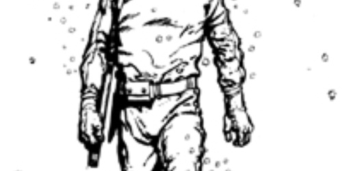

Nota de tapa
Un país de historieta

Tierra fértil para la imaginación, Argentina fue punta de lanza durante años de la historieta mundial, con una generación talentosa que cambió para siempre las formas y los contenidos de un género popular del que ahora sólo parecen sobrevivir jirones ...